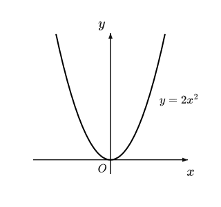

아래 그림의 이차함수 y=2x2의 그래프를 y축의 방향으로 평행이동하였다. 다음은 이동 후 그래프에 대한 기록이다.
항목
기록
그래프가 지나는 점
(−2,5)
이동 방향
□
이동 거리
□
이동한 방향과 거리를 바르게 짝지은 것은?

①
y축의 양의 방향으로 3만큼
②
y축의 음의 방향으로 3만큼
③
y축의 양의 방향으로 5만큼
④
y축의 음의 방향으로 5만큼
⑤
y축의 음의 방향으로 8만큼
3.4점
어떤 이차함수의 그래프를 조사하여 다음 기록표를 만들었다.
항목
기록
축의 방정식
x=−2
꼭짓점의 위치
x축 위
y축과 만나는 점
(0,20)
그래프 위의 다른 점
(−3,t)
이 기록표에서 t의 값은?
①
−5
②
−1
③
1
④
5
⑤
20
15.4점
둘레의 길이가 15πcm인 원형 전시 안내판에 길이가 12cm인 현 AB를 경계선으로 표시하였다. 현 AB와 두 호 AB 중 길이가 짧은 호로 둘러싸인 부분을 장식하려고 한다. 짧은 호 AB의 중점을 P, 현 AB의 중점을 M이라 하면 MP⊥AB이다. 장식할 부분의 높이인 MP의 길이는? (단, O는 안내판의 중심이고, P와 O는 직선 AB의 서로 반대쪽에 있다. 구하려는 높이는 0<MP<안내판의 반지름의 길이를 만족하는 짧은 높이이다.)
①
23cm
②
3cm
③
29cm
④
6cm
⑤
215cm
21.8점
반원의 접선 길이를 측정한 기록에서 왼쪽 높이만 빠져 있다. 그림과 같이 지름 AB를 수평으로 놓고, 왼쪽 끝점을 A, 오른쪽 끝점을 B라 하였다. AD와 BC는 각각 A,B에서의 접선이며, D와 C는 직선 AB의 위쪽, 즉 반원이 있는 쪽에 있다. CD는 반원에 E에서 접하고, E는 선분 CD의 두 끝점 사이에 있다. 또한 AD>BC>0이다.
측정 기록 ∘ 지름 AB의 길이: 10cm ∘ 오른쪽 접선 BC의 길이: 825cm
왼쪽 접선 AD의 길이를 구하고, 접선의 성질과 피타고라스 정리를 이용한 풀이 과정을 쓰시오.